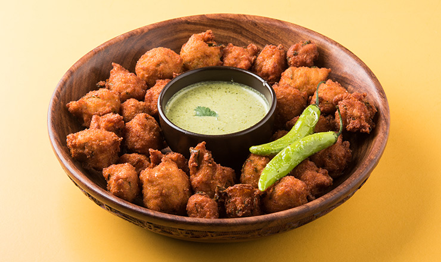

You cannot go to Indore and come back without having
tasted the scrumptious moong bhajiyas!
They can be had as an evening snack and perhaps even for breakfast.
They are always served fresh and piping hot, which only goes to add to
their wonderful taste.
The best place to indulge in these bhajiyas is
Uncleji Ke Moong Bhajiye, located at Anoop Nagar.
Cost For Two: Rs 80 (approx.)